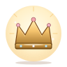

👗 Outfit Icons v1 — wardrobe
8 個朵朵衣櫥裝扮 SVG，取代原 emoji（✨🧣👓🎧👒👼👑🧑🍳）。viewBox 0 0 96 96，純手刻 SVG，可直接進 production。
風格對齊集團 SVG style guide v1（badge v5 風格）— 軟漸層 + 地面陰影 + 3-6s ease-in-out 微動態。鎖定狀態走 CSS filter:grayscale（外層處理）。
基本造型
none
預設 · 泡泡 + sparkle
溫暖圍巾
scarf
LV.5 · 玫瑰漸層 + 飄心
玫瑰耳機
headphones
LV.12 · 飄音符
草帽
straw_hat
7 day streak · 太陽光線

天使翅膀
angel_wings
LV.20 · halo 光環

FP 皇冠
fp_crown
FP 團隊專屬 · 金色寶石
FP 主廚裝
fp_chef
FP 團隊專屬 · 廚師帽 + 圍裙
實際使用尺寸（48 / 64 / 80 / 96 px）— wardrobe grid 大概顯示 64-80px